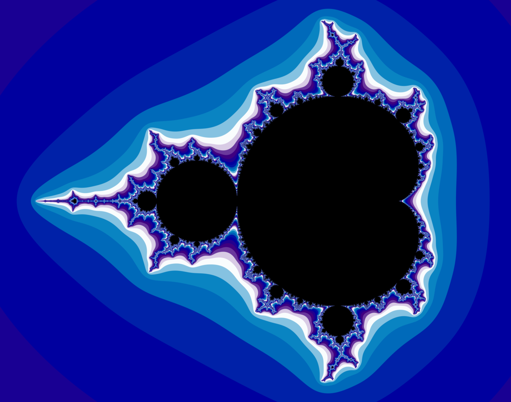

Види комп'ютерної графіки
Растрова графіка
- Растрова графіка представляє графічний об’єкт у вигляді комбінації точок, яким притаманні свій колір та яскравість.
- Одну точку такого зображення називають пікселем. Кожен піксель має свій власний колір, визначений числовими значеннями (наприклад, RGB або CMYK).
- Растрові зображення представляють собою масив кольорових точок, які відображаються на моніторі, папері та інших відображальних пристроях.
Растрова графіка дозволяє нам створювати реалістичні зображення, але вона має свої переваги та недоліки. Наприклад, вона не підходить для безперервного масштабування через фіксовану кількість пікселів. Також, растрові зображення займають більше місця на диску порівняно з векторними зображеннями.


Векторна графіка
- Векторна графіка базується на використанні елементарних геометричних об’єктів — графічних примітивів
- Базовим елементом векторної графіки є лінія, яка описується математичною формулою
- Векторні зображення використовують для створення графічних об’єктів, для яких має значення збереження чітких та ясних контурів (креслення, схеми, логотипи, мапи, діаграми тощо) навіть при зміні розмірів
Векторна графіка використовується для створення логотипів, ілюстрацій, схем, діаграм, веб-графіки та багато іншого. Вона дозволяє точно контролювати форму та розмір об’єктів. Векторна графіка не може точно відтворити фотографії та зображення зі складними текстурами.
Фрактальна графіка
- Фрактальна графіка базується на фрактальній геометрії
- Фрактал — це об’єкт, окремі елементи якого успадковують якості батьківських структур
- Побудова фрактальних зображень відбувається шляхом автоматичної генерації за формулами
Вивчення фракталів допомагає розуміти природні об’єкти та їх моделювання.
Фрактали використовуються для стиснення інформації, оскільки їх опис може займати всього декілька байт.
Фрактальна графіка — цікавий об’єкт для вивчення,
оскільки поєднує математику, природу та можливості стиснення інформації.
Найвідоміший фрактал — Множина Мандельброта, яка має складні структури, що повторюються на різних масштабах.

Тривимірна графіка
- Тривимірна графіка використовується для створення об’ємних об’єктів, які мають довжину, ширину та висоту
- Вона оперує віртуальним тривимірним простором, який відображається на плоскій або двовимірній поверхні дисплея
- Ця графіка базується на математичних моделях об’єктів, які можуть бути відображені в тривимірному просторі